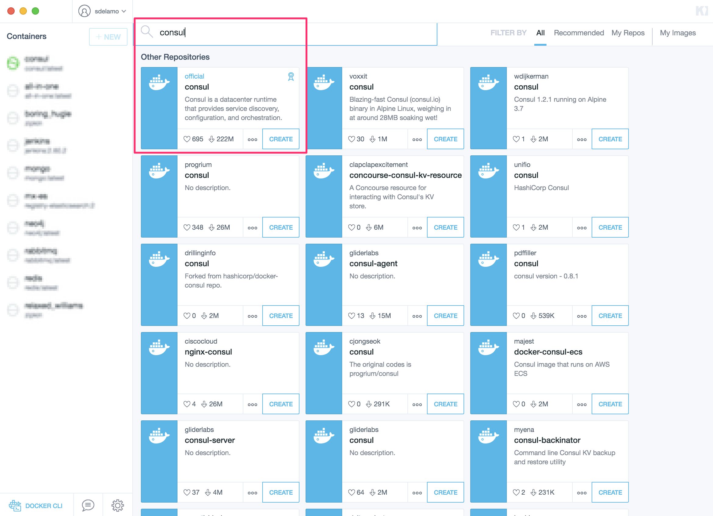
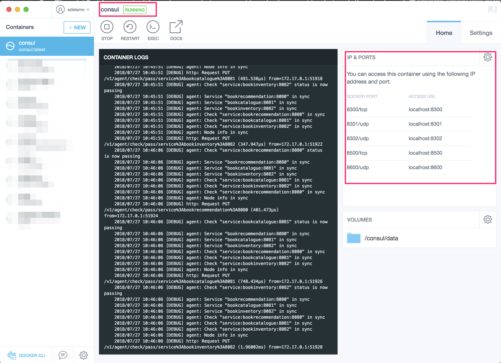
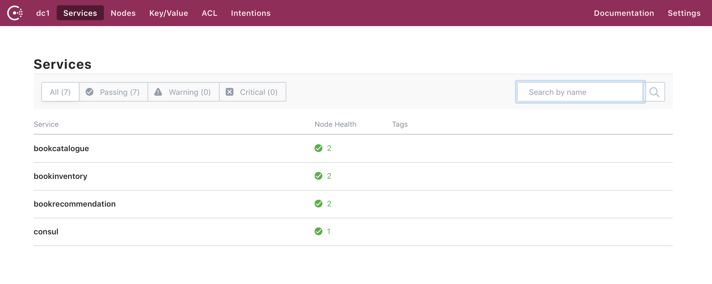

Consul and the Micronaut Framework - Microservices Service Discovery
Use Consul service discovery to expose your Micronaut applications.
On this guide
In this section
Getting Started
In this guide, we will create three microservices and register them with Consul Service discovery.
Consul is a distributed service mesh to connect, secure, and configure services across any runtime platform and public or private cloud.
You will discover how the Micronaut framework eases Consul integration.
What you will need
To complete this guide, you will need the following:
-
Some time on your hands
-
A decent text editor or IDE (e.g. IntelliJ IDEA)
-
JDK 21 or greater installed with
JAVA_HOMEconfigured appropriately
Solution
We recommend that you follow the instructions in the next sections and create the application step by step. However, you can go right to the completed example.
-
Download and unzip the source
Writing the App
Let’s describe the microservices you will build through the guide.
-
bookcatalogue- It returns a list of books. It uses a domain consisting of a book name and an ISBN. -
bookinventory- It exposes an endpoint to check whether a book has sufficient stock to fulfill an order. It uses a domain consisting of a stock level and an ISBN. -
bookrecommendation- It consumes previous services and exposes an endpoint that recommends book names that are in stock.
Initially, we will hard-code the service addresses in the bookcatalogue service.

As shown in the previous image, the bookcatalogue hardcodes references to its collaborators.
In the second part of this guide, we will use a discovery service.
|
Note
|
About registration patterns We will use a self‑registration pattern. Thus, each service instance is responsible for registering and deregistering itself with the service registry. Also, if required, a service instance sends heartbeat requests to prevent its registration from expiring. |
Services register when they start up:

We will use client‑side service discovery. Clients query the service registry, select an available instance, and make a request.

Catalogue Microservice
Create the bookcatalogue microservice using the Micronaut Command Line Interface or with Micronaut Launch.
mn create-app --features=discovery-consul,management,graalvm example.micronaut.bookcatalogue --build=maven --lang=kotlin|
Note
|
If you don’t specify the --build argument, Gradle with the Kotlin DSL is used as the build tool. If you don’t specify the --lang argument, Java is used as the language.If you don’t specify the --test argument, JUnit is used for Java and Kotlin, and Spock is used for Groovy.
|
If you use Micronaut Launch, select Micronaut Application as application type and add the discovery-consul, management, and graalvm features.
The previous command creates a directory named bookcatalogue and a Micronaut application inside it with default package example.micronaut.
|
Note
|
If you have an existing Micronaut application and want to add the functionality described here, you can view the dependency and configuration changes from the specified features, and apply those changes to your application. |
Create a BooksController class to handle incoming HTTP requests into the bookcatalogue microservice:
The previous controller responds with a List<Book>. Create the Book POJO:
package example.micronaut
import io.micronaut.serde.annotation.Serdeable
import jakarta.validation.constraints.NotBlank
@Serdeable
data class Book(@NotBlank val isbn: String,
@NotBlank val name: String)Write a test:
Edit application.properties
Modify the Application class to use dev as a default environment:
The Micronaut framework supports the concept of one or many default environments. A default environment is one that is only applied if no other environments are explicitly specified or deduced.
package example.micronaut
import io.micronaut.context.env.Environment.DEVELOPMENT
import io.micronaut.runtime.Micronaut.build
fun main(args: Array<String>) {
build()
.args(*args)
.packages("example.micronaut")
.defaultEnvironments(DEVELOPMENT)
.start()
}Create src/main/resources/application-dev.properties. The Micronaut framework applies this configuration file only for the dev environment.
Create a file named application-test.properties which is used in the test environment:
consul.client.registration.enabled=falseRun the unit test:
./mvnw testInventory Microservice
Create the bookinventory microservice using the Micronaut Command Line Interface or with Micronaut Launch.
mn create-app --features=discovery-consul,management,graalvm example.micronaut.bookinventory --build=maven --lang=kotlin|
Note
|
If you don’t specify the --build argument, Gradle with the Kotlin DSL is used as the build tool. If you don’t specify the --lang argument, Java is used as the language.If you don’t specify the --test argument, JUnit is used for Java and Kotlin, and Spock is used for Groovy.
|
If you use Micronaut Launch, select Micronaut Application as application type and add the discovery-consul, management, and graalvm features.
The previous command creates a directory named bookinventory and a Micronaut application inside it with default package example.micronaut.
|
Note
|
If you have an existing Micronaut application and want to add the functionality described here, you can view the dependency and configuration changes from the specified features, and apply those changes to your application. |
Create a Controller:
Create the POJO used by the controller:
package example.micronaut
import io.micronaut.serde.annotation.Serdeable
import jakarta.validation.constraints.NotBlank
@Serdeable
data class BookInventory(@NotBlank val isbn: String,
val stock: Int)Write a test:
package example.micronaut
import io.micronaut.http.HttpRequest
import io.micronaut.http.HttpStatus.NOT_FOUND
import io.micronaut.http.HttpStatus.OK
import io.micronaut.http.client.HttpClient
import io.micronaut.http.client.annotation.Client
import io.micronaut.http.client.exceptions.HttpClientResponseException
import io.micronaut.test.extensions.junit5.annotation.MicronautTest
import jakarta.inject.Inject
import org.junit.jupiter.api.Assertions.assertEquals
import org.junit.jupiter.api.Assertions.assertThrows
import org.junit.jupiter.api.Assertions.assertTrue
import org.junit.jupiter.api.Test
@MicronautTest
class BooksControllerTest(@Client("/") val httpClient: HttpClient) {
@Test
fun testBooksController() {
val rsp = httpClient.toBlocking().exchange(
HttpRequest.GET<Any>("/books/stock/1491950358"), Boolean::class.java)
assertEquals(OK, rsp.status())
assertTrue(rsp.body() == true)
}
@Test
fun testBooksControllerWithNonExistingIsbn() {
val thrown = assertThrows(HttpClientResponseException::class.java) {
httpClient.toBlocking().exchange(HttpRequest.GET<Any>("/books/stock/XXXXX"), Boolean::class.java)
}
assertEquals(NOT_FOUND, thrown.response.status)
}
}Edit application.properties
Modify the Application class to use dev as a default environment:
The Micronaut framework supports the concept of one or many default environments. A default environment is one that is only applied if no other environments are explicitly specified or deduced.
package example.micronaut
import io.micronaut.context.env.Environment.DEVELOPMENT
import io.micronaut.runtime.Micronaut.build
fun main(args: Array<String>) {
build()
.args(*args)
.packages("example.micronaut")
.defaultEnvironments(DEVELOPMENT)
.start()
}Create src/main/resources/application-dev.properties. The Micronaut framework applies this configuration file only for the dev environment.
Create a file named application-test.properties which is used in the test environment:
consul.client.registration.enabled=falseRun the unit test:
./mvnw testRecommendation Microservice
Create the bookrecommendation microservice using the Micronaut Command Line Interface or with Micronaut Launch.
mn create-app --features=discovery-consul,management,reactor,graalvm example.micronaut.bookrecommendation --build=maven --lang=kotlin|
Note
|
If you don’t specify the --build argument, Gradle with the Kotlin DSL is used as the build tool. If you don’t specify the --lang argument, Java is used as the language.If you don’t specify the --test argument, JUnit is used for Java and Kotlin, and Spock is used for Groovy.
|
If you use Micronaut Launch, select Micronaut Application as application type and add the discovery-consul, management, reactor, and graalvm features.
The previous command creates a directory named bookrecommendation and a Micronaut application inside it with default package example.micronaut.
|
Note
|
If you have an existing Micronaut application and want to add the functionality described here, you can view the dependency and configuration changes from the specified features, and apply those changes to your application. |
Create an interface to map operations with bookcatalogue, and a Micronaut Declarative HTTP Client to consume it.
package example.micronaut
import org.reactivestreams.Publisher
interface BookCatalogueOperations {
fun findAll(): Publisher<Book>
}The client returns a POJO. Create it in the bookrecommendation:
package example.micronaut
import io.micronaut.serde.annotation.Serdeable
import jakarta.validation.constraints.NotBlank
@Serdeable
data class Book(@NotBlank val isbn: String,
@NotBlank val name: String)Create an interface to map operations with bookinventory, and a Micronaut Declarative HTTP Client to consume it.
package example.micronaut
import reactor.core.publisher.Mono
import jakarta.validation.constraints.NotBlank
interface BookInventoryOperations {
fun stock(@NotBlank isbn: String): Mono<Boolean>
}Create a Controller which injects both clients.
The previous controller returns a Publisher<BookRecommendation>. Create the BookRecommendation POJO:
package example.micronaut
import io.micronaut.serde.annotation.Serdeable
import jakarta.validation.constraints.NotBlank
@Serdeable
data class BookRecommendation(@NotBlank val name: String)BookCatalogueClient and BookInventoryClient will fail to consume the bookcatalogue and bookinventory during the tests phase.
Using the @Fallback annotation, you can declare a fallback implementation of a client that will be picked up and used once all possible retries have been exhausted.
Create @Fallback alternatives in the test classpath.
package example.micronaut
import io.micronaut.context.annotation.Requires
import io.micronaut.context.env.Environment.TEST
import io.micronaut.retry.annotation.Fallback
import jakarta.inject.Singleton
import org.reactivestreams.Publisher
import reactor.core.publisher.Flux
@Requires(env = [TEST])
@Fallback
@Singleton
class BookCatalogueClientStub : BookCatalogueOperations {
override fun findAll(): Publisher<Book> {
val buildingMicroservices = Book("1491950358", "Building Microservices")
val releaseIt = Book("1680502395", "Release It!")
return Flux.just(buildingMicroservices, releaseIt)
}
}Write a test:
package example.micronaut
import io.micronaut.core.type.Argument
import io.micronaut.http.HttpRequest
import io.micronaut.http.client.HttpClient
import io.micronaut.http.client.annotation.Client
import io.micronaut.test.extensions.junit5.annotation.MicronautTest
import jakarta.inject.Inject
import org.junit.jupiter.api.Assertions.assertEquals
import org.junit.jupiter.api.Test
import org.junit.jupiter.api.condition.DisabledIfEnvironmentVariable
@MicronautTest
class BookControllerTest(@Client("/") val client: HttpClient) {
@DisabledIfEnvironmentVariable(named = "CI", matches = "true")
@Test
fun testRetrieveBooks() {
val books = client.toBlocking().retrieve(HttpRequest.GET<Any>("/books"),
Argument.listOf(BookRecommendation::class.java))
assertEquals(1, books.size)
assertEquals("Building Microservices", books[0].name)
}
}Edit application.properties
Modify the Application class to use dev as a default environment:
The Micronaut framework supports the concept of one or many default environments. A default environment is one that is only applied if no other environments are explicitly specified or deduced.
package example.micronaut
import io.micronaut.context.env.Environment.DEVELOPMENT
import io.micronaut.runtime.Micronaut.build
fun main(args: Array<String>) {
build()
.args(*args)
.packages("example.micronaut")
.defaultEnvironments(DEVELOPMENT)
.start()
}Create src/main/resources/application-dev.properties. The Micronaut framework applies this configuration file only for the dev environment.
Create a file named application-test.properties which is used in the test environment:
consul.client.registration.enabled=falseRun the unit test:
./mvnw testRunning the application
Run bookcatalogue microservice:
./mvnw mn:run14:28:34.034 [main] INFO io.micronaut.runtime.Micronaut - Startup completed in 499ms. Server Running: http://localhost:8081Run bookinventory microservice:
./mvnw mn:run14:31:13.104 [main] INFO io.micronaut.runtime.Micronaut - Startup completed in 506ms. Server Running: http://localhost:8082Run bookrecommendation microservice:
./mvnw mn:run14:31:57.389 [main] INFO io.micronaut.runtime.Micronaut - Startup completed in 523ms. Server Running: http://localhost:8080You can run a cURL command to test the whole application:
curl http://localhost:8080/books[{"name":"Building Microservices"}]Consul and the Micronaut framework
Install Consul via Docker
The quickest way to start using Consul is via Docker:
docker run -p 8500:8500 consulAlternatively you can install and run a local Consul instance.
The following screenshots show how to install/run Consul via Kitematic, a UI for Docker.

Configure ports:

Book Catalogue
Append the following snippet to the bookcatalogue service application.properties:
consul.client.registration.enabled=true
consul.client.defaultZone=${CONSUL_HOST:localhost}:${CONSUL_PORT:8500}This configuration registers a Micronaut application with Consul with minimal configuration. Discover a more complete list of configuration options at ConsulConfiguration.
Book Inventory
Modify the application.properties of the bookinventory application with the following snippet:
consul.client.registration.enabled=true
consul.client.defaultZone=${CONSUL_HOST:localhost}:${CONSUL_PORT:8500}Book Recommendation
Append the following snippet to the bookrecommendation service application.properties:
consul.client.registration.enabled=true
consul.client.defaultZone=${CONSUL_HOST:localhost}:${CONSUL_PORT:8500}Modify BookInventoryClient and BookCatalogueClient to use the service id instead of a hard-coded URL.
Running the App
Run bookcatalogue microservice:
./gradlew run14:28:34.034 [main] INFO io.micronaut.runtime.Micronaut - Startup completed in 499ms. Server Running: http://localhost:8081
14:28:34.084 [nioEventLoopGroup-1-3] INFO i.m.d.registration.AutoRegistration - Registered service [bookcatalogue] with ConsulRun bookinventory microservice:
./gradlew run14:31:13.104 [main] INFO io.micronaut.runtime.Micronaut - Startup completed in 506ms. Server Running: http://localhost:8082
14:31:13.154 [nioEventLoopGroup-1-3] INFO i.m.d.registration.AutoRegistration - Registered service [bookinventory] with ConsulRun bookrecommendation microservice:
./gradlew run14:31:57.389 [main] INFO io.micronaut.runtime.Micronaut - Startup completed in 523ms. Server Running: http://localhost:8080
14:31:57.439 [nioEventLoopGroup-1-3] INFO i.m.d.registration.AutoRegistration - Registered service [bookrecommendation] with ConsulConsul comes with a HTML UI. Open http://localhost:8500/ui in your browser.
You will see the services registered in Consul:

You can run a cURL command to test the whole application:
curl http://localhost:8080/books[{"name":"Building Microservices"}]Generate a Micronaut Application Native Executable with GraalVM
We will use GraalVM, an advanced JDK with ahead-of-time Native Image compilation, to generate a native executable of this Micronaut application.
Compiling Micronaut applications ahead of time with GraalVM significantly improves startup time and reduces the memory footprint of JVM-based applications.
|
Note
|
Only Java and Kotlin projects support using GraalVM’s native-image tool. Groovy relies heavily on reflection, which is only partially supported by GraalVM.
|
GraalVM Installation
sdk install java 25.0.2-graalFor installation on Windows, or for a manual installation on Linux or Mac, see the GraalVM Getting Started documentation.
The previous command installs Oracle GraalVM, which is free to use in production and free to redistribute, at no cost, under the GraalVM Free Terms and Conditions.
Alternatively, you can use the GraalVM Community Edition:
sdk install java 25.0.2-graalceNative Executable Generation
To generate a native executable using Maven, run:
./mvnw package -Dpackaging=native-imageThe native executable is created in the target directory and can be run with target/micronautguide.
It is possible to customize the name of the native executable or pass additional build arguments using the Maven plugin for GraalVM Native Image building. Declare the plugin as follows:
Start the native executables for the three microservices and run the same curl request as before to check that everything works with GraalVM.
Next Steps
Read more about Consul support in the Micronaut framework.
Help with the Micronaut Framework
The Micronaut Foundation sponsored the creation of this Guide. A variety of consulting and support services are available.
License
|
Note
|
All guides are released with an Apache License 2.0 for the code and a Creative Commons Attribution 4.0 license for the writing and media (images). |